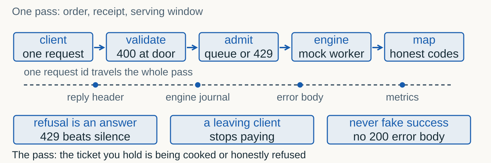
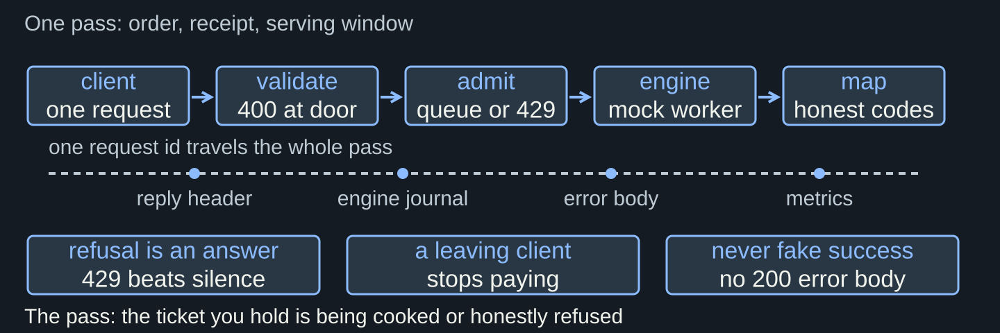
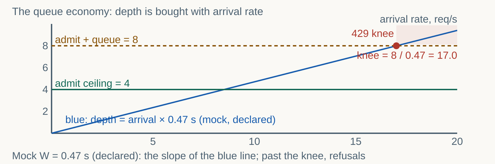
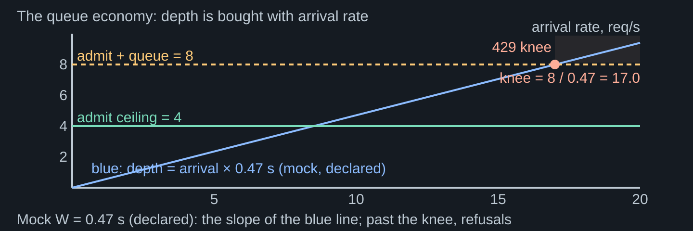
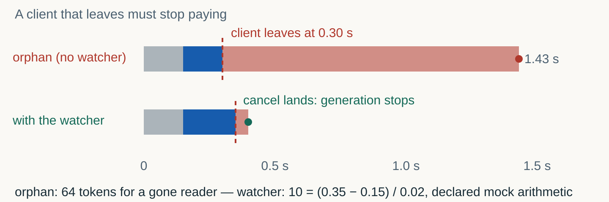
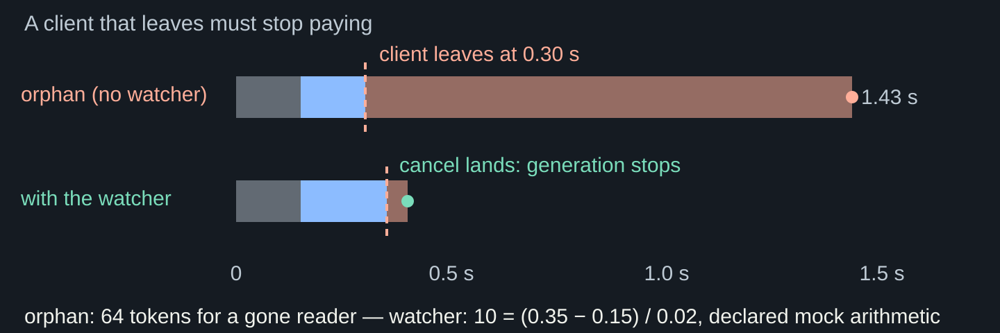
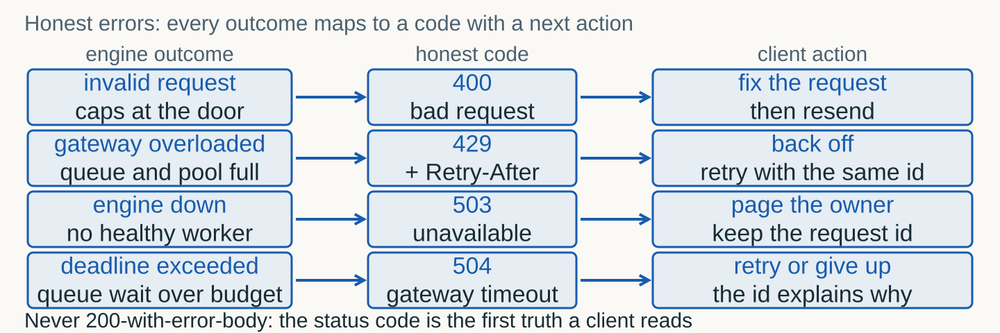
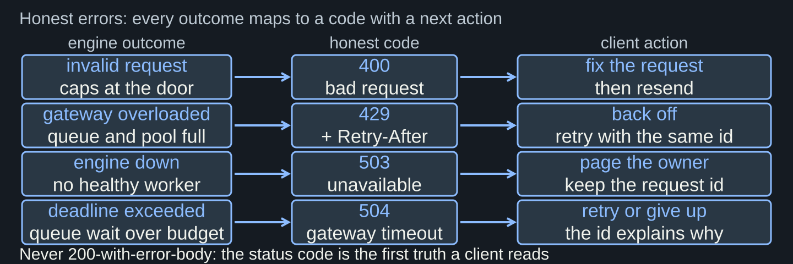

One thin gateway over the frozen profile: orders become receipts, refusals stay honest.
Один тонкий шлюз над замороженным профилем: заказы становятся чеками, отказы остаются честными.
A frozen engine profile (seqs-32) with proof: saturation curve, tail, rollback plan. But a profile is an internal component — a client cannot import it.
Замороженный профиль движка (seqs-32) с доказательствами: кривая насыщения, хвост, план отката. Но профиль — внутренний компонент, клиент его не импортирует.
A stranger sends HTTP. One thin gateway decides: validate, admit, serve, map, reply. Every Topic 06 mechanism reappears as an API decision.
Незнакомец шлёт HTTP. Один тонкий шлюз решает: валидировать, допустить, обслужить, картить, ответить. Каждый механизм темы 06 снова возникает как решение API.


| StageСтадия | Decision it ownsРешение, за которое отвечает | Refuses withС чем отказывает |
|---|---|---|
| validate | Are the caps respected: prompt length, token budgetСоблюдены ли потолки: длина промпта, бюджет токенов | 400 at the door400 на входе |
| admit | Is there a service slot, a bounded wait, or nothingЕсть ли сервисный слот, ограниченное ожидание или ничего | 429 + Retry-After |
| engine | Generate under the frozen profileГенерирует под замороженным профилем | delegates outcomesделегирует исходы |
| map | Which honest code names this terminal outcomeКакой честный код называет этот терминальный исход | 503 / 504 with the id503 / 504 с id |
Prompt text, a token budget, an optional schema for structured replies. Hard caps are PUBLIC: a client that knows the ceiling can fix its own request.
Текст промпта, бюджет токенов, опциональная схема для структурированных ответов. Жёсткие потолки ПУБЛИЧНЫ: клиент, знающий потолок, может починить свой запрос сам.
Liveness plus in-flight count. The daemon, the probes and the on-call read the same pulse — no private health route, no hidden truth.
Liveness плюс число запросов в работе. Демон, пробы и дежурный читают один и тот же пульс — никаких приватных health-роутов, никакой скрытой правды.
| FieldПоле | CapПотолок | RefusalОтказ |
|---|---|---|
prompt | Required, at most 512 charactersОбязательно, не более 512 символов | 400 with the reason400 с причиной |
max_tokens | Integer in 1..64Целое в 1..64 | 400 with the reason400 с причиной |
response_schema | Optional mini-schema for guided JSONОпциональная мини-схема для guided JSON | 422 on violation422 при нарушении |
X-Request-Id (reply)(ответ) | Assigned at the door, echoed everywhereНазначается на входе, эхом везде | — |
The gateway mints the id before validation, admission or generation. From that moment the request has a name in every log line.
Шлюз чеканит id до валидации, допуска и генерации. С этого момента у запроса есть имя в каждой строке лога.
Reply header, engine journal, error body, metrics snapshot. The error body carries it verbatim: the retrying client correlates its own attempts.
Заголовок ответа, журнал движка, тело ошибки, снапшот метрик. Тело ошибки несёт его дословно: повторяющий клиент коррелирует свои попытки.
Every arrival is accepted, depth grows, and the delay is paid by clients who were never asked. The pager sees nothing until the timeouts arrive.
Каждый входящий принят, глубина растёт, задержку платят клиенты, которых никто не спрашивал. Пейджер не видит ничего, пока не придут таймауты.
Capacity in service, a finite waiting line, and an honest refusal beyond. Depth becomes a declared number; refusal becomes a designed answer.
Ёмкость в обслуживании, конечная линия ожидания и честный отказ сверх того. Глубина становится заявленным числом; отказ — спроектированным ответом.


Now: refused, with a declared pause and the request id. The retry is a decision, not a gamble — backoff is computable.
Сейчас: отказано, с заявленной паузой и id запроса. Ретрай — это решение, а не азарт: backoff вычислим.
A rising rejected counter is a designed signal, not silent rot. Refusal is capacity speaking; an endless queue is capacity lying.
Растущий счётчик отказов — спроектированный сигнал, а не тихое гниение. Отказ — это ёмкость говорит; бесконечная очередь — это ёмкость лжёт.
Every admitted request carries a budget. A queue wait beyond it becomes 504 with the id — the slot returns to service, the client learns why.
Каждый допущенный запрос несёт бюджет. Ожидание в очереди сверх него становится 504 с id — слот возвращается в обслуживание, клиент узнаёт почему.
A closed socket is a decision by the client. The gateway must stop the generation, journal outcome cancelled, and count the tokens burned for nobody.
Закрытый сокет — решение клиента. Шлюз обязан остановить генерацию, записать в журнал исход cancelled и посчитать токены, сожжённые в никуда.




| Engine outcomeИсход движка | CodeКод | Client actionДействие клиента |
|---|---|---|
| Invalid request (caps are public)Невалидный запрос (потолки публичны) | 400 | Fix the request, resendПочини запрос, перешли |
| Gateway overloaded (pool 4+4 full)Шлюз перегружен (пул 4+4 полон) | 429 + Retry-After | Back off, retry with the same idОтступи, ретрай с тем же id |
| Engine down (no healthy worker)Движок лежит (нет здорового воркера) | 503 | Page the owner; keep the idДёрни владельца; сохрани id |
| Deadline exceeded (queue wait over budget)Дедлайн истёк (ожидание в очереди сверх бюджета) | 504 | Retry or give up — the id explains whyРетрай или сдаться — id объяснит почему |
A 200 envelope with an error inside passes every shallow health check, poisons the client’s success path, and corrupts its retry logic without a trace.
Конверт 200 с ошибкой внутри проходит любую поверхностную проверку здоровья, отравляет success-ветку клиента и без следа портит его ретрай-логику.
The status code is the first truth a client reads. Success and failure never share an envelope; the body explains, the code decides.
Статус-код — первая правда, которую читает клиент. Успех и неудача никогда не делят конверт; тело объясняет, код решает.
Server-sent events deliver text while the engine decodes. The client sees progress; the gateway still owns admission, deadline and the error map.
Server-sent events доставляют текст, пока движок декодирует. Клиент видит прогресс; шлюз по-прежнему ведает допуском, дедлайном и картой ошибок.
A client gone at frame k is the Episode 5 mechanism one frame later: stop the task, journal the waste. No new machinery — the same watcher.
Клиент, пропавший на кадре k, — механизм Эпизода 5 на кадр позже: останови задачу, запиши расход в журнал. Никакой новой техники — тот же наблюдатель.
An optional response schema rides with the prompt. The engine constrains decoding; the gateway validates the reply against the SAME schema before answering.
Опциональная response-схема едет вместе с промптом. Движок ограничивает декодирование; шлюз валидирует ответ по ТОЙ ЖЕ схеме, прежде чем отвечать.
A reply that breaks the schema is a visible 422 with the exact path — not a silent cast, not a 200 with apologies. The client sees which field lied.
Ответ, ломающий схему, — это видимый 422 с точным путём, не тихий каст и не 200 с извинениями. Клиент видит, какое поле солгало.
Accepted, rejected-429, cancelled, in-flight, waste. Each exists because a named decision needs it — a metric you did not plan is a metric you will fake.
Принято, отклонено-429, отменено, в работе, расход впустую. Каждый существует, потому что нужен поименованному решению, — метрика, которую вы не планировали, станет метрикой, которую вы подделаете.
At snapshot time cancelled reads zero: cancellations arrive only after the watcher block. A zero that is explained beats a number that is decorated.
В момент снапшота cancelled читается нулём: отмены приходят только после блока наблюдателя. Объяснённый ноль лучше приукрашенного числа.
| CounterСчётчик | FeedsКормит | Danger if absentОпасность, если нет |
|---|---|---|
| accepted | Capacity against arrival rateЁмкость против скорости входящих | You size the fleet by vibesФлот вы размеряете по вайбу |
| rejected (429) | Backpressure health; SLO budgetЗдоровье backpressure; бюджет SLO | Overload stays invisible until timeoutsПерегрузка невидима, пока не придут таймауты |
| cancelled | Waste accounting; client behaviorУчёт расхода впустую; поведение клиентов | Abandoned generation burns silentlyБрошенная генерация жжёт молча |
| in-flight | Live saturation vs the frozen profileЖивое насыщение против замороженного профиля | The knee arrives unannouncedКолено приходит без предупреждения |
| waste tokens | The price of leaving clientsЦена уходящих клиентов | Cancellation looks free foreverОтмена выглядит бесплатной вовек |
| WaveВолна | CompletedЗавершены | Rejected 429Отказы 429 | CancelledОтмены |
|---|---|---|---|
| 8 clients8 клиентов | majority served, two disconnects cancelledбольшинство обслужено, два отключения отменены | 0% | about 25%около 25 % |
| 24 clients24 клиента | the admitted few finishдопущенные немногие завершаются | about 2/3 refused — the kneeоколо 2/3 отказано — колено | the armed watcher stops the restвзведённый наблюдатель останавливает остальных |
Tail inside the gateway, error budget, rejection policy: who gets 429 and with what pause. One paragraph a product owner and an on-call both sign.
Хвост внутри шлюза, бюджет ошибок, политика отказов: кто получает 429 и с какой паузой. Один абзац, который подписывают и продуктовый владелец, и дежурный.
The policy is part of the promise: an honest 429 with Retry-After IS the contract working, not an apology. Silence and endless queues are the breach.
Политика — часть обещания: честный 429 с Retry-After — ЭТО работающий контракт, а не извинение. Молчание и бесконечные очереди — вот нарушение.
| ClauseПункт | Draft valueЧерновое значение | Who signs itКто подписывает |
|---|---|---|
| p95 inside the gatewayp95 внутри шлюза | 2.0 s2.0 с | product ownerпродуктовый владелец |
| Error budgetБюджет ошибок | 1% of attempts1 % попыток | on-callдежурный |
| Rejection policyПолитика отказов | 429 + Retry-After at pool 4+4, exponential retry429 + Retry-After при пуле 4+4, экспоненциальный ретрай | bothоба |
| Cancellation accountingУчёт отмен | waste tokens journaled per requestтокены впустую журналируются по каждому запросу | on-callдежурный |
| BridgeМост | T09 ships this app as an immutable imageT09 отгружает это приложение неизменяемым образом | platformплатформа |
Nothing about the pass. The same gateway, the same probes, the same 429s — packaged as an immutable image so behavior stops depending on the host.
В проходе — ничего. Тот же шлюз, те же пробы, те же 429 — упакованные в неизменяемый образ, чтобы поведение перестало зависеть от хоста.
A contract that is not yet honest cannot be frozen into an image. First the pass refuses correctly; then the image preserves the refusal everywhere.
Контракт, который ещё не честен, нельзя заморозить в образ. Сначала проход отказывает правильно; затем образ сохраняет отказ всюду.
Latency knobs are written in the notebook and on every figure: the mechanism runs in minutes on free CPU. No number here quotes vLLM.
Ручки латентности записаны в ноутбуке и на каждой фигуре: механизм гоняется за минуты на бесплатном CPU. Ни одно число здесь не цитирует vLLM.
Real detection latency, preemption storms, scheduler jitter: the live vLLM behind this gateway is an owner demonstration with retained evidence.
Настоящая латентность детекции, штормы вытеснений, джиттер шедулера: живой vLLM за этим шлюзом — демонстрация владельца с сохранёнными доказательствами.
Predict the contract. Keep refusals honest. Stop the orphaned generation.
Count the waste. Journal everything.
Предскажи контракт. Держи отказы честными. Останови осиротевшую генерацию.
Посчитай расход впустую. Журналируй всё.